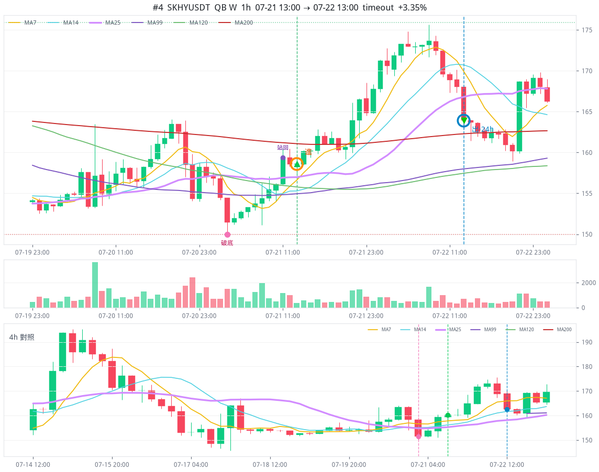
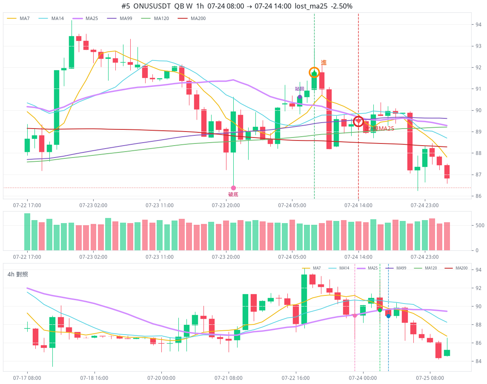

近 250 天 · 380 檔訊號池 30 筆 · 做成 20 單
全部本金開倉，平了才能開下一筆。不計資金費。黃點高點、紅點谷底。
整段線性圖。後面漲到 438，前面 119→110 看起來會扁，回撤放大見下圖。
高點 07-21 13:00 SKHYUSDT 後 119.04 USDT
谷底 07-24 08:00 ONUSUSDT 後 110.13 USDT
最痛單筆 07-24 08:00 ONUSUSDT 價格 -2.50%（帳戶 -7.49%）
SKHYUSDT 07-21 13:00 · timeout · 價格 +3.35% · 108.17 → 119.04 USDT

ONUSUSDT 07-24 08:00 · lost_ma25 · 價格 -2.50% · 119.04 → 110.13 USDT

ONUSUSDT 07-24 08:00 · lost_ma25 · 價格 -2.50% · 119.04 → 110.13 USDT
07-21 到 07-24 · 2 單 · 119 → 110
| 進場 | 標的 | 出場 | 價格 | 帳戶 | 餘額 |
|---|---|---|---|---|---|
| 07-21 13:00 | SKHYUSDT 高點 | timeout | +3.35% | +10.04% | 119.04 |
| 07-24 08:00 | ONUSUSDT 谷底 最痛 | lost_ma25 | -2.50% | -7.49% | 110.13 |